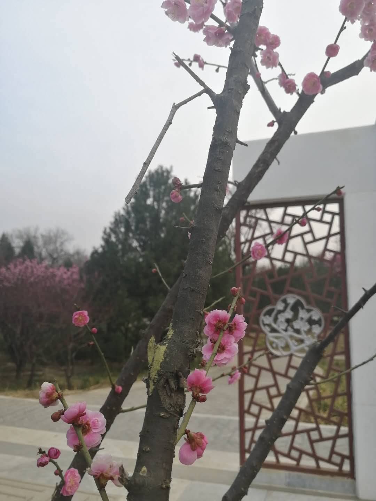

<h1><center>梅花</center></h1>
<p><center>

    </center></p>
<p><center>
梅花是中国十大名花之首，与兰花、竹子、菊花一起列为“四君子”，与松、竹并称为“岁寒三友”。</center></p>
   <center><p>梅花有很多种类。想在这个季节赏梅，可以去北京植物园，是赏梅的好地方。那里的梅园有各色梅花。在栈道的梅林里穿梭，有种奇妙的感受。
    </center></p>
   <body bgcolor="#FFFAF0">